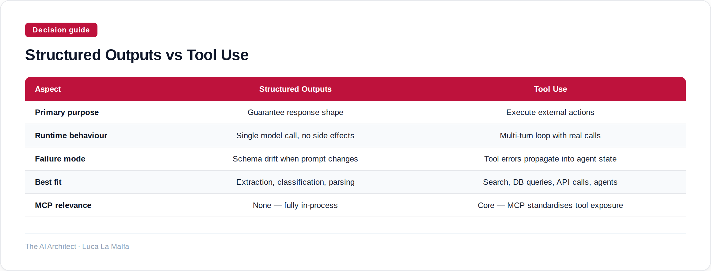

Two ways to constrain what an LLM returns — they solve different problems, and conflating them costs you.
October 15, 2026
Here is a distinction that trips up almost every team I work with at the start: structured outputs and tool use are not two names for the same thing. Structured outputs are about what the model returns — you hand it a JSON schema and the response is guaranteed to conform. Tool use is about what the model can do — you hand it a set of callable functions and the model decides when to invoke them. One is a formatting contract. The other is an action contract. Mixing up which one you need leads to architectures that are either over-engineered or brittle in subtle ways.
The practical difference shows up fast. If you need a model to extract entities from a document and deposit them into a database, structured outputs alone get you 80% of the way there — parse the response, write the rows, done. But if the model needs to look up a current stock price, run a SQL query, or call an internal API mid-reasoning, you need tool use. The model must be able to pause, fire an external call, and resume with the result. Structured outputs cannot do that. They are synchronous and self-contained by design.
Option A
anthropics/claude-cookbooks — Tool-use and structured-output recipes (calculators, SQL, customer service agents).
Notice the trick in that first example: I'm using a tool definition to enforce a schema, but tool_choice is pinned to a specific tool name. The model never actually calls an external function — it just fills in the input object. This is the idiomatic way to get structured outputs on the Anthropic API today, and it works reliably. The schema is validated server-side; you don't get a response that half-conforms. The downside is that you're borrowing the tool-use machinery for a purpose it wasn't originally designed for, which can confuse teammates who expect tools to do something.
Real tool use looks different. The model sees a set of functions, decides which one to call and with what arguments, and your code is responsible for executing that call and feeding the result back. The loop is explicit. This is where MCP (Model Context Protocol) becomes relevant — instead of hand-wiring each tool as a bespoke function in your application, you expose them as a server that any compliant client can discover and call. The protocol handles the plumbing; you focus on what each tool actually does.
Option B
modelcontextprotocol/servers — Reference MCP server implementations that expose tools to LLMs.

The question I ask before any build is: does the model need to wait for something to happen before it can finish? If yes, you need tool use. If the model has everything it needs in context and you just want the output in a predictable shape, structured outputs are simpler and safer. Agents that mix both patterns — structured outputs for intermediate parsing steps, tool calls for side-effecting actions — tend to be the most maintainable, because each concern is handled by the mechanism actually designed for it. The failure modes are also cleaner: a schema violation is immediately obvious; a tool that silently returns stale data is not.
Inspired by Tree Appreciator (Simon Willison)